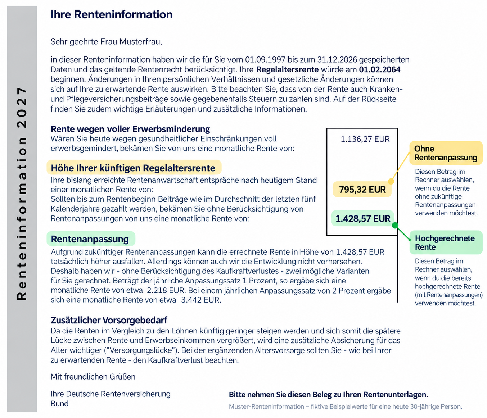

Rechner / Rentenlückenrechner
Rentenlückenrechner
Was fehlt dir später zum Leben – und wie viel musst du heute zurücklegen, um diese Lücke zu schließen?
Schritt 1 von 3
📄 Deine Rentenlücke
Übertrage die prognostizierte Altersrente aus deiner Renteninformation. Die Musterwerte dienen nur als Beispiel.

Jahre
Jahre
€ netto
€ brutto
Rente mit angenommener Rentenanpassung von 2 % jährlich. Die Rentenanpassung ist bereits enthalten und wird nicht nochmals angewendet.
%
%
Vereinfachter Platzhalter für Steuern sowie Kranken- und Pflegeversicherung. Die tatsächlichen Abzüge sind individuell und können deutlich abweichen.
Schritt 2 von 3
🏦 Kapitalbedarf zum Rentenstart
Wie soll dein Vermögen während der Rente eingesetzt werden?
Jahre
% p. a.
Die benötigten Ausgaben steigen während der Rente weiter mit der angenommenen Inflation. Die gesetzliche Rente wird während der Entnahmephase vorsichtshalber nominal konstant gehalten. Kapitalerhalt bezieht sich auf das Ende der gewählten Entnahmedauer.
Schritt 3 von 3
📈 Rentenlücke schließen
Berechne, wie viel du bis zum Rentenbeginn monatlich zurücklegen musst.
€
% p. a.